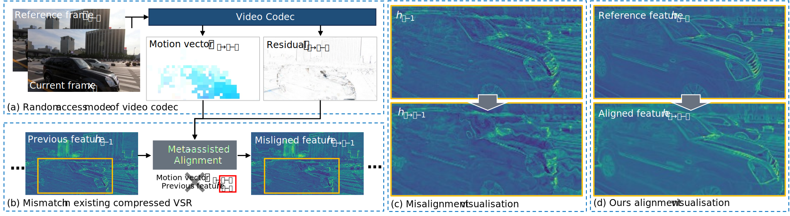
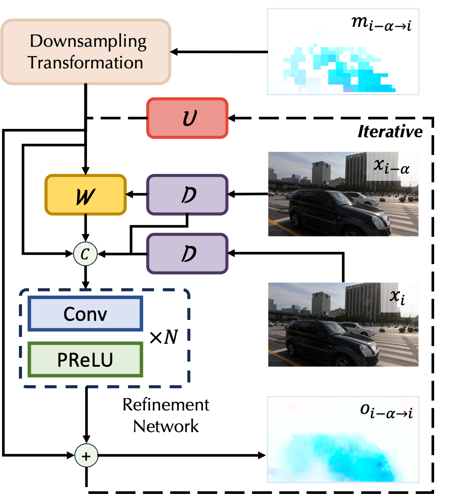
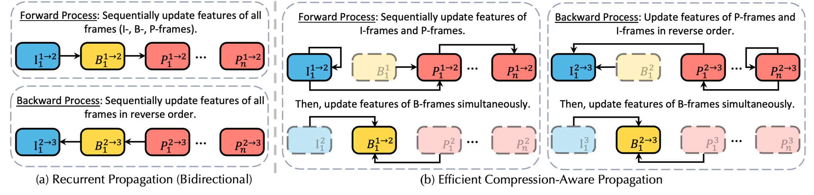

- 1 University of Queensland
- 2Auckland University of Technology
- 3Intel
- 4Beijing Jiaotong University
- 5AI^2 Robotics
The demonstration video involves Our COVSR method and 4x bicubic interpolation, and is compressed for fast loading.
You can select different constant rate factors for different scenes within two testsets.
Constant Rate Factor
Testset
Scene
Abstract
Current compressed video super-resolution methods have achieved promising performance but they often assume that an input video is compressed under low-delay configurations.
However, under random access configurations, those methods might struggle to leverage the metadata effectively due to the large variations of metadata in different compression configurations.

Comparison of our method and the state-of-the-art compressed video super-resolution method (CAVSR).
(a) At time step i, metadata is generated by a current frame xi and a reference frame xi−α, where the value of α is decided by the codec process.
(b) Since α is not always equal to 1, using mismatched metadata (motion vector mi-α->i in CAVSR to align the previous adjacent feature fi-1 will cause misalignment.
(c) Some visualizations of misalignment in CAVSR.
(d) Our alignment method accurately models the moving car and retains better contours thanks to the effective use of metadata.
In this work, we propose a general Compression-Omniscient Video Super-Resolution (COVSR) method that can address video super-resolution for both low-delay and random-access configurations. Specifically, we first introduce an efficient compression-aware propagation (ECAP) module that dynamically adjusts propagation routes in accordance with the compression configurations. Since existing methods require reconstructing frames in a frame-by-frame manner, it is difficult to achieve efficient parallelization. However, we found that by slightly sacrificing temporal dependencies, our ECAP can significantly improve inference speed. Furthermore, considering that ECAP may bring challenges in cross-frame alignment, we designed a metadata-driven alignment (MDA) module to refine the motion vectors rather than calculating cross-frame offsets from scratch. MDA first transforms motion vectors into coarse optical flows and then iteratively refines them over several scales into dense feature-level optical flows. In this way, MDA significantly improves the quality of motion vectors while achieving faster alignment speed by exploiting metadata. Extensive experimental results demonstrate that our COVSR not only achieves efficient and superior super-resolution performance but also is generalizable to various compression configurations. Our code will be available.
In this work, we propose a general Compression-Omniscient Video Super-Resolution (COVSR) method that can address video super-resolution for both low-delay and random-access configurations. Specifically, we first introduce an efficient compression-aware propagation (ECAP) module that dynamically adjusts propagation routes in accordance with the compression configurations. Since existing methods require reconstructing frames in a frame-by-frame manner, it is difficult to achieve efficient parallelization. However, we found that by slightly sacrificing temporal dependencies, our ECAP can significantly improve inference speed. Furthermore, considering that ECAP may bring challenges in cross-frame alignment, we designed a metadata-driven alignment (MDA) module to refine the motion vectors rather than calculating cross-frame offsets from scratch. MDA first transforms motion vectors into coarse optical flows and then iteratively refines them over several scales into dense feature-level optical flows. In this way, MDA significantly improves the quality of motion vectors while achieving faster alignment speed by exploiting metadata. Extensive experimental results demonstrate that our COVSR not only achieves efficient and superior super-resolution performance but also is generalizable to various compression configurations. Our code will be available.
Method
The architecture of our Compression-Omniscient Video Super-Resolution (COVSR) is shown in Fig. 2.
COVSR aims to restore the high-resolution (HR) frames from low-resolution (LR) frames with the assistance of metadata, such as frame types and block sizes.
Specifically, COVSR consists of four modules: feature extraction module, Efficient Compression-Aware Propagation (ECAP), Metadata-Driven Alignment (MDA) module, and upsampling module.
Let xi denotes the current frame at time step i, and xi-α, xi+β represent its two reference frames. In order to generate a high-resolution frame, xi undergoes different states to extract rich features, i.e., fij represents the feature at the j-th (j=1,2,3) state. The high-resolution frame of xi can be generated using the following steps:
Let xi denotes the current frame at time step i, and xi-α, xi+β represent its two reference frames. In order to generate a high-resolution frame, xi undergoes different states to extract rich features, i.e., fij represents the feature at the j-th (j=1,2,3) state. The high-resolution frame of xi can be generated using the following steps:
- The shallow feature fi1 of the frame xi is obtained from the feature extraction module.
- MDA first refines motion vectors between the reference frames and the current frame to obtain accurate feature-level optical flows oi-α → i and oi+β → i. Then, aligned reference states fi-α → ij, fi+β → ij are obtained by optical flow and warping operations.
 - The aligned reference states are fed into the feature fusion blocks along with the previous state fij-1 to generate the aggregation feature fij. The fij will then be propagated as a state in ECAP.
 - The final feature fi3 is derived after propagation. We input it to the upsampling module to generate the high-resolution frame.